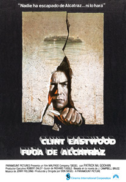

Fuga de Alcatraz
San Francisco. enero de 1960. Un transbordador llega a la isla de Alcatraz llevando a Frank Morris, un nuevo prisionero hasta la prisión de máxima seguridad de la isla tras haber logrado escapar de otras prisiones.
Tras pasar varios controles, le examina un doctor antes de ser encerrarlo en su nueva celda.
La primera persona a la que conoce es al que llaman Tornasol por el color cambiante de su piel cuando cambia la temperatura, el cual tiene como mascota a un ratoncillo al que da de comer y lleva con él a todas partes.
En el comedor ve también a Lobo, que lo observa y le muestra lo duro que es dejando que una cerilla se apague entre sus dedos.
Llamado por Warden, el alcaide, a su despacho, este le explica que cuando no se cumplen las normas de la sociedad te envían a prisión y cuando no cumples las normas de la prisión, te envían a Alcatraz, una auténtica fortaleza, diferente a cualquier otra cárcel, pues los presos permanecen en celdas individuales y de donde, le asegura, nadie logró nunca fugarse, asegurándole que es invulnerable.
Le informa también de que allí no se premian las buenas conductas, ni se les permite tener conocimiento de lo que ocurre en el exterior, aunque pueden recibir dos visitas al mes, no proponiendo Morris ningún nombre.
En las duchas se las tiene que ver con Lobo, que tras colocarse junto a él le dice que busca un nuevo mancebo y que él ha sido el elegido, ante lo que Morris lo golpea duramente, acabando por meterle el jabón en la boca.
Requerido por uno de los guardias para que colabore repartiendo por las celdas libros y revistas, conoce a English, el encargado de la biblioteca, un negro que parece duro, con el que luego hablará en el patio, donde parece ser el líder de los presos de color, preguntándole por las posibilidades de fuga que existen, explicándole este que Alcatraz es diferente a cualquier otra prisión, pues esta tiene un guardia por cada tres presos, y conocen las costumbres de cada uno, estando los barrotes reforzados, no cabiendo tampoco la posibilidad de excavar un túnel, pues la isla es roca pura, y, aun en el caso de conseguir escapar tendrían que nadar más de una milla entre fuertes corrientes y en un agua helada, habiendo además recuentos de reclusos 12 veces al día.
Conoce también en el patio a "Doc", un tipo que dedica sus ratos de ocio a la pintura, y que le advierte que tenga cuidado con Lobo, pues acabará haciéndole daño.
Y efectivamente, pocos días después es atacado por Lobo mientras está en el patio, aunque gracias a Doc no consigue sorprenderlo, consiguiendo defenderse, y, aunque fue él el atacado ordenan que vayan los dos al bloque D, a las celdas de castigo, permaneciendo recluido en una celda que está a oscuras y donde les lavan con un chorro de agua a presión, pasando así los días uno tras otro y todos iguales.
Cuando consigue salir conoce a otro Charlie Butts, un nuevo recluso, que le cuenta que llegó allí porque era ladrón de automóviles, y que cuando salió de la cárcel le robó el coche a un guardia que le hacía la vida imposible.
Entretanto el alcaide revoca el privilegio de pintar a Doc tras descubrir en su celda un retrato suyo.
Para entonces Morris ha conseguido trabajo en la carpintería, y es testigo de cómo Doc, disgustado al no poder seguir pintando, que es lo que le hacía mantener la ilusión se corta sus dedos con un hacha.
Observa tras ello que antes de hacerlo le metió una flor en su pantalón como la que había dibujado previamente en su autoretrato.
Un día observa cómo sale una cucaracha por la rejilla de ventilación y se le ocurre una idea, observando que allí el hormigón está menos duro por la acción del salitre.
Llegan también entre los nuevos presos dos viejos amigos a los que Morris conoció en la prisión de Atlanta., los hermanos John y Clarence Anglin y con los que opta por preparar la fuga, uniéndoseles Butts tras enterarse por su mujer de que le quedan pocas semanas de vida a su madre
Comienzan a prepararlo todo pensando en huir por la noche, cuando pasan más periodo sin controles, debiendo pertrecharse con herramientas para ello, debiendo conseguir impermeables y pegamentos para hacer con ellos una balsa con la que huirán, no hacia San Francisco, sino hacia otra isla cercana, en dirección contraria.
Acaban fabricando una herramienta para excavar con el mango de una cuchara que roba en el comedor que suelda a un trozo de cortaúñas, haciéndose además en el taller con una cuña para poder hacer saltar los pernos que sujetan las rejillas.
Charlie simula que le gusta la pintura como a Doc y se hace con los tubos que les servirán para, tras fabricar una cabeza falsa con trozos de periódico, pintarla como si fueran ellos, consiguiendo además pelo en la peluquería para pegarlo en la cabez.
Así, con el muñeco sustituyéndolo en la cama, Morris podrá salir tranquilamente por la noche hacia los conductos del aire e investigar el mejor modo de huir hasta llegar a una salida que no puede alcanzar solo, pues son unos barrotes que están en lo alto, por lo que al día siguiente sube con John Anglin.
Un día ve el alcaide en el comedor uno de los crisantemos que cuidaba Doc y señala que contraviene el reglamento, por lo que lo aplasta, ante lo que Tornasol se lanza hacia él, aunque le da un ataque al corazón antes de llegar hasta él.
Ignoran que el alcaide, informado de la amistad que existe entre Butts y Morris ordena que los cambien de celda, señalando que lo harán el martes por la mañana, justamente el día que han elegido ellos para escapar, aunque por la noche.
Además Lobo sale de las celdas de aislamiento, lo que pondrá en peligro la intención de realizar la fuga, por lo que, para evitar incidentes deciden adelantarla un día.
Pese a todo Lobo trata de llevar a cabo su venganza atacándolo, aunque en ese caso se lo impide English, que no desea ver frustrada la fuga de su amigo.
Así pues, con todo preparado, deciden adelantar la fuga, que realizarán esa noche, saliendo los hermanos Anglin y Morris, pues Butts se ponen nervioso y cuando finalmente se decide a huir es demasiado tarde y ya los otros van demasiado adelantados no pudiendo alcanzar él solo la salida del techo, por lo que debe regresar a su celda.
Entretanto los otros tres fugitivos corren por los tejados, deslizándose más tarde por tuberías, saltando tras ello una alambrada consiguiendo escapar del recinto carcelario, dirigiéndose tras ello hasta la playa, donde inflan las improvisadas balsas antes de salir hacia el mar.
Cuando por la mañana descubren que Morris no está en su celda hacen saltar todas las alarmas iniciándose de inmediato su búsqueda por la isla y por la bahía de San Francisco, aunque lo único que encuentran es una bolsa con fotos de uno de los Anglin, dudando si se ahogaron, tesis del alcaide, o lo que trataron de hacer fue dejar pistas falsas.
Encuentran también un crisantemo y lo tira al agua asegurando que esas flores no crecen allí antes de recibir una llamada del director general de prisiones desde Washington.
Se buscó a los Anglin y a Morris masivamente sin éxito, y aquella prisión inexpugnable hasta entonces fue cerrada poco menos de un año después.